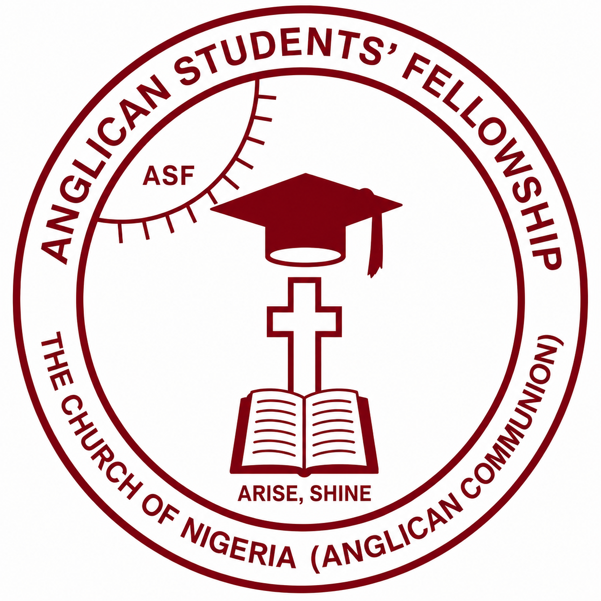

ASFAnglican Students’ Fellowship — Uniben / UBTH
Isaiah 60:1 — “The Glorious Family,” restoring the ancient landmark since 1994. Christian students, saved through the death of Christ, excelling academically and shining forth the word of God.
ASF UNIBEN/UBTH is part of the Anglican Students’ Fellowship (ASF) Nigeria, born in 1997 under The Most Rev. J. Abiodun, Primate of Nigeria, with the vision “Restoring the Ancient Landmark” (Proverbs 22:28, Jeremiah 6:16). We’re open to every student — Anglican or not — who wants spiritual growth alongside academic excellence.
Formed in April 1994 to bridge the gap between youth and adults in the Anglican Communion, ASF Uniben/UBTH grew from two parallel visions — Bro. Jude Edomwonyi’s Anglican Students’ Fellowship and Bro. Kingsley Egwuonwu’s Anglican Youth Fellowship — both founders later ordained as priests. Early milestones include the fellowship’s first keyboard (1997), its first drum set (1998), and its anthem “We Are One Family,” adopted in 1999.
We hold to the biblical faith expressed in the Apostles’ Creed, the Nicene Creed and the Thirty-Nine Articles — emphasising a personal knowledge of God, Jesus Christ as Lord and Saviour, and the infilling and work of the Holy Spirit.